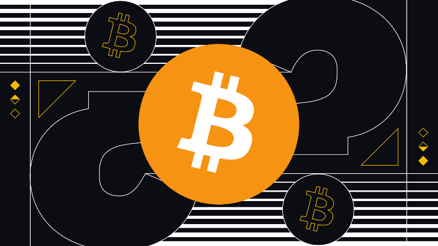

| Como usuario nuevo, usted puede empezar con Bitcoin sin entender los detalles técnicos. Una vez usted tenga instalado un monedero en su ordenador o dispositivo móvil, se generará su primera dirección Bitcoin y podrá crear más cuando lo necesite. Puede dar su dirección a sus amigos para que le paguen o viceversa. De hecho, es similar a como funciona el correo electrónico, excepto que las direcciones Bitcoin solamente deberían ser usadas una única vez. La cadena de bloques o "block chain" es una contabilidad pública compartida en la que se basa toda la red Bitcoin. Todas las transacciones confirmadas se incluyen en la cadena de bloques. De esta manera los monederos Bitcoin pueden calcular su saldo gastable y las nuevas transacciones pueden ser verificadas, asegurando que el cobro se esta haciendo al que realiza el pago. La integridad y el orden cronológico de la cadena de bloques se hacen cumplir con criptografía. Una transacción es una transferencia de valores entre monederos Bitcoin que será incluida en la cadena de bloques. Los monederos Bitcoin disponen de un fragmento secreto llamado clave privada, utilizada para firmar las operaciones, proporcionando una prueba matemática de que la transacción está hecha por el propietario del monedero. La firma también evita que la transacción no sea alterada por alguien una vez ésta ha sido emitida. Todas las transacciones son difundidas entre los usuarios y por lo general empiezan a ser confirmadas por la red en los 10 minutos siguientes a través de un proceso llamado minería. |  |